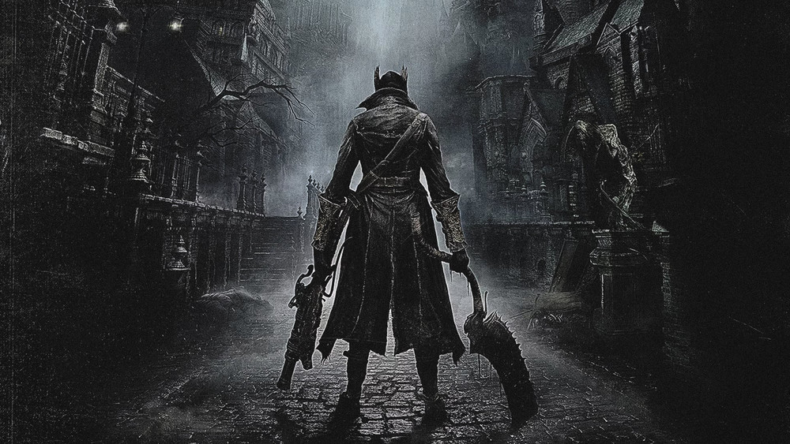
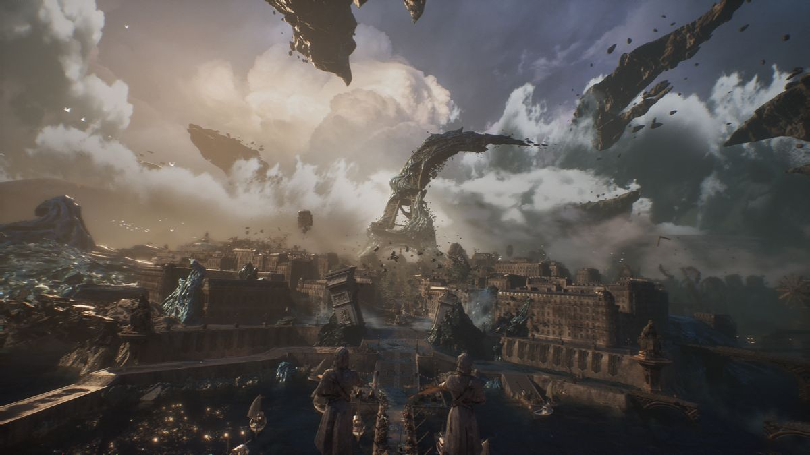
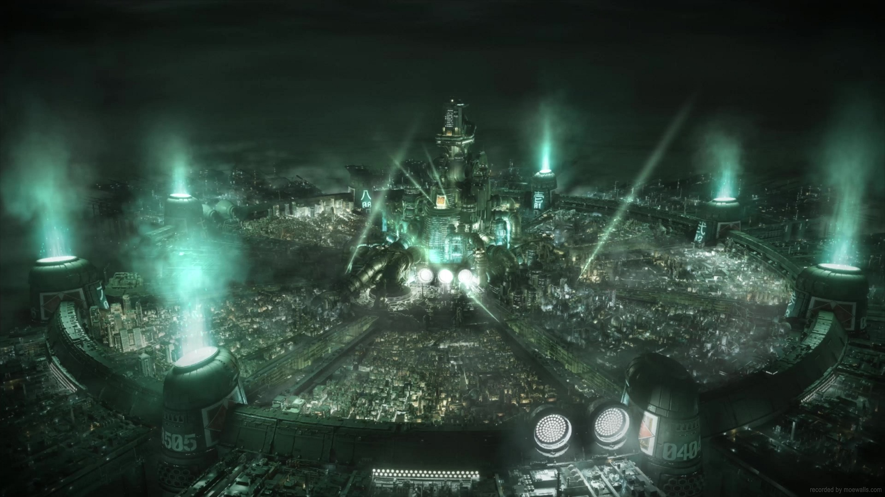

Bloodborne · Musica & Filosofia
La sublime orchestra dell'orrore
Come Miyazaki ha trasformato l'orrore in sublime. Lore, Burke, Tommaso d'Aquino e tre ambiti musicali per capire perché la soundtrack di Bloodborne è un'opera irripetibile — e perché quel vinile forse non si può davvero ascoltare fuori dal gioco.

OST · Parte III di III · Il podio
Le 10 migliori soundtrack nei videogiochi — Parte III
Il lutto di Dark Souls, la voce di Death Stranding, l'ascensione di Clair Obscur Expedition 33.

OST · Parte II di III
Le 10 migliori soundtrack nei videogiochi — Parte II
Dal cosmo wagneriano di Midgar al banjo nell'ignoto, dalla foresta di Nibel alle aurore boreali di Skyrim.

OST · Parte I di III
Le 10 migliori soundtrack nei videogiochi — Parte I
Non una lista con punteggi e stelline. Un viaggio tra armonie, timbri e silenzi — con i motivi tecnici per cui quella musica è straordinaria.